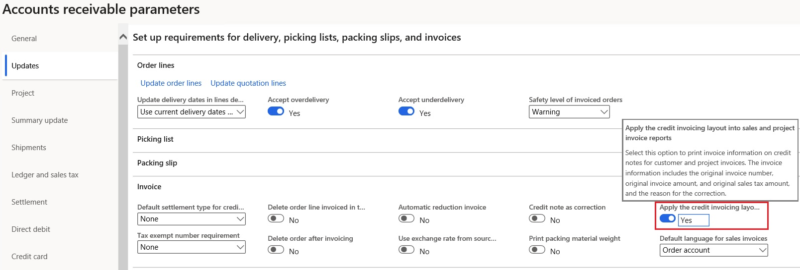
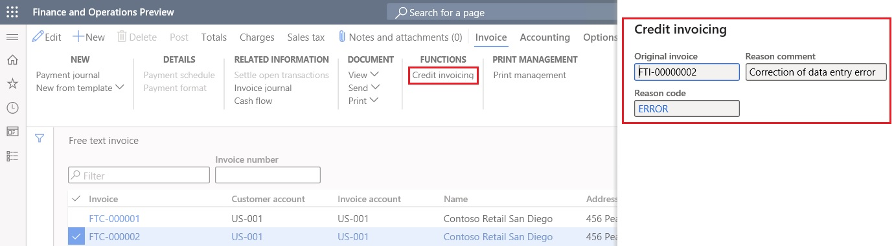
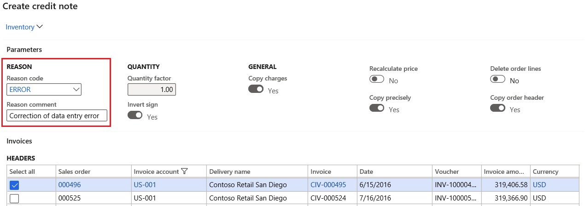
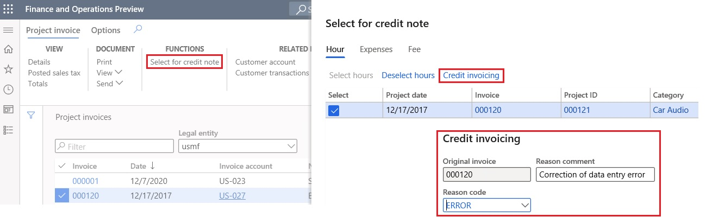

References to original invoices in credit notes
[!include[banner](../includes/banner.md)]In some countries and regions, there is a legal requirement that printed credit notes include references to the original invoices. This topic explains how to set up and print the original invoice numbers in related credit notes.
Prerequisites
- In the Feature management workspace, turn on the Credit invoicing layout for sales and project invoice reports feature. For more information, see Feature management overview.
- The printable formats of the required documents must be configured in Print management.
The functionality that is described in this topic applies to the following documents:
Accounts receivable
- Free text credit note
- Customer credit note
Project management and accounting
- Project credit note
Configure Accounts receivable parameters
Follow these steps to set the parameter that controls whether references to the original invoices are printed in related credit notes.
- Go to Accounts receivable > Setup > Accounts receivable parameters.
- On the Updates tab, on the Invoice FastTab, set the Apply the credit invoicing layout into sales and project invoice reports option to Yes.

Define references to original invoices
Use the following procedures to define references to original invoices, based on the document type.
Free text credit note
- Go to Accounts receivable > Invoices > All free text invoices.
- Create a new credit note, or select an existing credit note.
- Open the invoice.
- On the Action Pane, on the Invoice tab, in the Functions group, select Credit invoicing.
- Enter the reference to the original invoice, and select the reason for the correction.

Customer credit note
- Go to Accounts receivable > Orders > All sales orders.
- Select and open the invoiced sales order that must be corrected.
- On the Action Pane, on the Sell tab, in the Credit note group, select Credit note.
- Enter the reason for the correction. The reference to the original invoice is automatically established.

Project credit note
- Go to Project management and accounting > Project invoices > Project invoices.
- Select and open the project invoice that must be corrected.
- On the Action Pane, on the Project invoice tab, in the Functions group, select Select for credit note.
- Select Credit invoicing.
- Enter the reason for the correction. The reference to the original invoice is automatically established.

Printing credit notes
When you print free text, customer, and project credit notes, they will include the reference to the original invoice and the correction reason.
Note
Make sure that the printable formats of the documents are correctly configured, on the assumption that references to original invoices will be printed.
Submit your requests to the Documentation Team